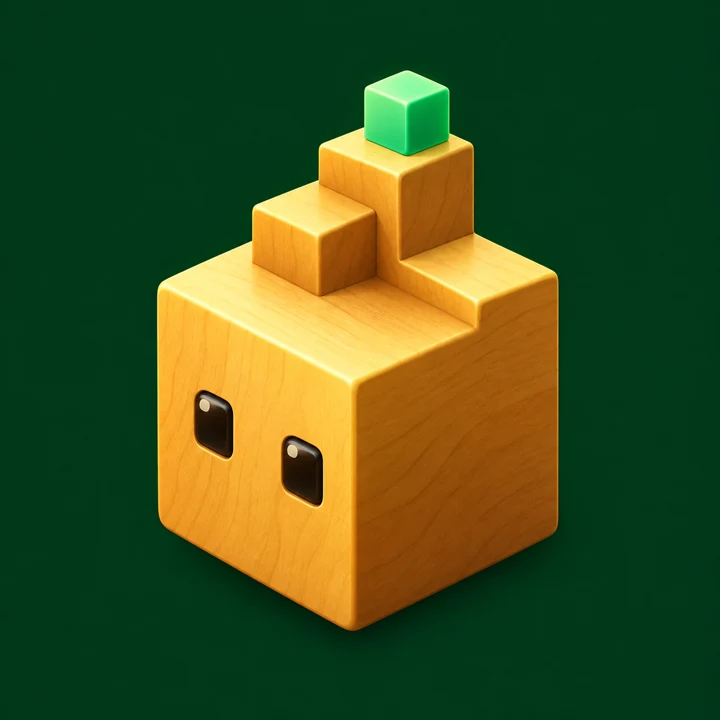
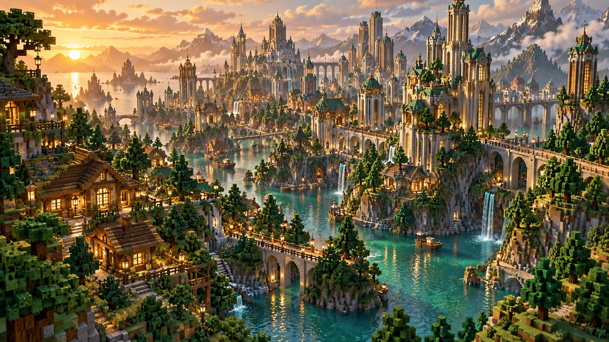
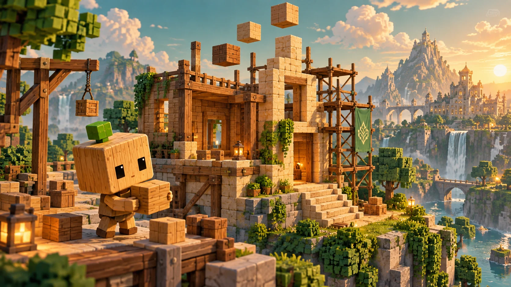
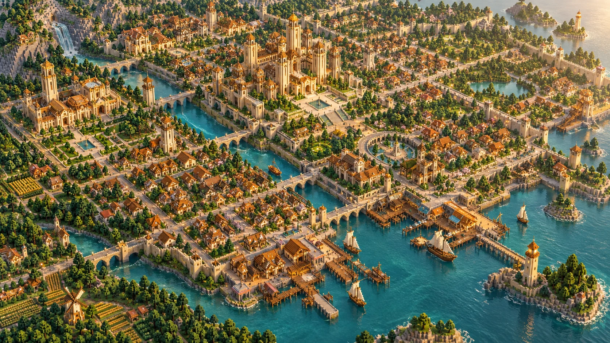

A little imagination.
The AI proposes a building's dimensions, materials, windows and roof, guided by its neighborhood.
Meet BLOKAI. An AI architect turning an empty Minecraft world into a city, one new idea at a time.

Follow the city as it takes shape.
Explore concept scenes while live services are offline.

An imagined BLOKAI city: from quiet neighborhoods to a growing skyline. Live camera not connected.

Every experiment begins with a blank canvas. Too many end with one, too. BLOKAI explores a different idea: let the builder keep building, and let its work become a world.
Homes become neighborhoods. Streets connect new places. Each structure becomes part of a longer story, with progress saved as the city develops.
BLOKAI brings AI design, voxel construction and a persistent city into one experiment. Its purpose is to explore how small design decisions accumulate into neighborhoods with their own character.
AI-generated designs meet a programmable Minecraft building system.
The AI proposes a building's dimensions, materials, windows and roof, guided by its neighborhood.
The building system translates that design into Minecraft structures, alongside streets, parks and public spaces.
Saved progress lets the builder continue expanding the city. Running continuously requires an active server.
On-chain building records and community co-building are future goals. This frontend does not provide wallet access or token transactions.
A city needs places to live, meet and explore. These are the building themes behind the world.

Towers, mid-rise buildings and row houses bring different scales to the city. Building proportions and materials respond to the surrounding district.
Homes, gardens, school campuses and sports grounds make room for more than tall buildings.
Parks, public plazas, paths and trees connect individual structures into a world worth exploring.
A clear direction, with progress described as it happens. Future features are goals, not live services.
The project website, visual identity and city concepts form the public starting point. Follow the story and explore the building approach.
Available hereConnect the Minecraft environment, camera, world map and server metrics so visitors can observe actual construction.
Live connection pendingExplore community-guided building and on-chain records of construction. Participation rules and implementation details will be shared as they develop.
Future explorationUnderstanding the experiment.
BLOKAI is an AI world-building project centered on a Minecraft city. It combines model-generated building specifications with code that constructs the resulting structures.
The AI can propose dimensions, materials, windows, roof shapes and setbacks for a building. Construction code interprets those parameters within the constraints of the world and its districts.
The city and builder images on this site are AI-generated concept illustrations. The live camera, map and event feed are not connected yet; numerical metrics remain blank until actual server data is available.
Continuous building requires an active Minecraft server, a running builder and access to its model service. Saved progress supports continuing between sessions; it does not make the system impossible to stop or reset.
Community co-building is a future goal. This website currently does not offer player access, wallet connection or building permissions. Follow the official X account for participation updates.
On-chain records are a planned direction and are not implemented on this website. No claim is made here that individual Minecraft blocks are immutable or stored on-chain.
Follow BLOKAI WORLD for project updates, new ideas and the next steps in the building experiment.